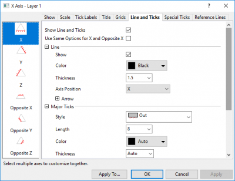
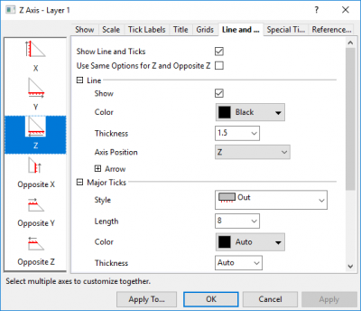
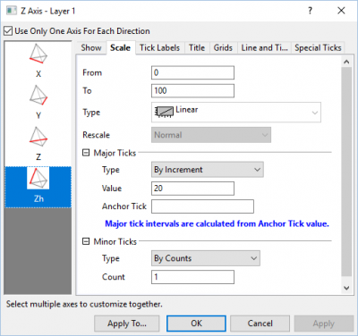

Der Dialog Achsen für ternäre und tetraedrische Koordinaten ist baumstrukturiert mit Bedienelementen für X/Y/Z/Zh-Achsen und Anpassungsoptionen für Hilfsstriche. Er wird für Achsen im Ternärdiagramm, ternären Konturdiagramm, dem ternären Teil des Piper-Diagramms, ternären 3D-Diagrammen und 3D-Tetraeder (auch bezeichnet als quaternäre Phasendiagramme) verwendet. Sie können auf ihn zugreifen, indem Sie doppelt auf die Achse oder im Menü auf Format: Achse:... klicken.
|  |  |
| Dialog Achsen für ternäre 2D-Diagramme | Dialog Achsen für rechtwinklige Ternärdiagramme |
|  | |
| Dialog Achsen für ternäre 3D-Diagramme | Dialog Achsen für tetraedrische 3D-Diagramme |
Um in diesem baumstrukturierten Dialog zu navigieren, klicken Sie auf ein Achsensymbol im linken Bedienfeld, um auf die Bedienelemente im rechten Bedienfeld zugreifen zu können.
In ternären 3D-Diagrammen werden standardmäßig nur die Achsen der unteren XYZ-Ebene gezeigt, wenn das Kontrollkästchen Nur eine Achse für jede Richtung verwenden aktiviert ist. Sollte es deaktiviert sein, können Sie die XYZ-Achsen in der oberen Ebene einzeln anzeigen. Die XYZ-Achsen in der unteren XYZ-Ebene werden als "Unten" definiert, während die Achsen in der oberen Ebene als "Oben" definiert werden.
In tetraedrischen 3D-Diagrammen (auch als quaternäre Phasendiagramme bezeichnet), werden nur die zwei unteren Achsen und eine Zh-Achse angezeigt, falls das Kontrollkästchen Nur eine Achse für jede Richtung verwenden aktiviert ist. Sollte es deaktiviert sein, wird die dritte untere Achse gezeigt. Sie können jede Achse einzeln benutzerdefiniert anpassen.
Beachten Sie, dass nicht alle Achsen gleichzeitig angezeigt werden, auch wenn sie eingeschaltet sind. Die Achsenanzeige ist auch mit der Ausrichtung des Diagrammlayers verbunden. Sie müssen vielleicht das Diagramm drehen, um die anderen Achsen anzuzeigen.
| X/Y/Z-Achse | Aktivieren oder deaktivieren Sie dieses Kontrollkästchen, um die Achse anzuzeigen oder zu verbergen. Bei einem rechtwinkligem Ternärdiagramm ist die Z-Achse per Standard verborgen. Wenn Sie sie einblenden, liegt sie auf der Y-Achse, hat aber die entgegengesetzte Skalierungsrichtung von der Y-Achse. |
|---|---|
| Gegenüberliegende X/Y/Z-Achse zeigen |
Standardmäßig hat ein ternäres 2D-Diagramm drei primäre Achsen, die auf den vollen Skalierungsbereich eingestellt sind (entweder 0 - 1 oder 0 - 100). Im linken Bedienfeld des Dialogs Achsen können Sie womöglich sehen, dass es drei "gegenüberliegende" Achsen gibt, die in den meisten Fällen nicht nützlich oder nicht deaktiviert sind.
Durch Begrenzen der Werte Von und Bis auf der Registerkarte Skalierung können Sie ein ternäres 2D-Diagramm erstellen, dass nur einen Teil der vollen Achsenskalierungsbereiche der primären Achsen verwendet. Die "gegenüberliegenden" Achsen sind vielleicht erforderlich. Wenn Sie zum Beispiel die Skalierungsbereiche aller drei primärer Achsen begrenzen, können Sie ein rautenförmiges Diagramm erstellen, dessen Achsen sich gegenüber liegen. Informationen dazu finden Sie in diesem OriginLab-Blogeintrag. |
| Gegenüberliegende Achse zeigen bei |
Legen Sie fest, ob die gegenüberliegende Achse gezeigt wird. Sie können die gegenüberliegenden Achse parallel zur Achse oder neben der Achse positionieren.
Sie können auch den LabTalk-Befehl layer.Axis.adj=0/1 verwenden, um die Position der gegenüberliegenden Achse zu wechseln. Wenn Sie zum Beispiel |
| Achsen zeigen | Unten (Standard), Oben oder Kein |
|---|---|
| Ausrichtung | Diese Option steuert die Ausrichtung der Hilfsstrichsbeschriftungen, Achsentitel und Hilfsstrichsmarkierungen. Der Standard ist Layereinstellung folgen. Sie können die Ausrichtung für jede Achse hier im Dialog Achse modifizieren oder Sie können zur Registerkarte Achse im Dialog Details Zeichnung (Layerebene) gehen und die Ausrichtung der Beschriftungen/Hilfsstriche/Titel für alle Achsen im Layer ändern. |
Alle Diagramme ternärer Art unterstützen nur lineare Achsenskalierungen.
| Von |
Legen Sie den Anfangswert der Skala in diesem Textfeld fest. |
|---|---|
| Bis |
Legen Sie den Endwert der Skala in diesem Textfeld fest. |
| Typ |
In ternären Koordinaten werden nur lineare Achsenskalierungen unterstützt. Dieses Bedienelement ist nicht verfügbar (nur lesbar). |
| Neu skalieren |
Zusätzliche Informationen zu diesen Modi der Achsenneuskalierung können Sie hier finden. |
| Große Hilfsstriche |
Legen Sie den Typ, den Wert und den ersten Hilfsstrich der großen Hilfsstriche fest (entsprechend dem Abschnitt für die Großen Hilfsstriche auf dieser Seite). |
| Kleine Hilfsstriche |
Legen Sie den Typ der kleinen Hilfsstriche fest (entsprechend dem Abschnitt für die Kleinen Hilfsstriche auf dieser Seite). |
Die Registerkarte Beschriftung der Hilfsstriche und seine Unterregisterkarten werden verwendet, um die Beschriftungen der Achsenhilfsstriche zu definieren. Im ternären Diagramm gibt es drei Unterregisterkarten für die Beschriftung der Hilfsstriche -- Anzeige, Format und Beschriftung der kleinen Hilfsstriche.
| Anzeige | Hilfe für die Bedienelemente der Registerkarte Anzeige finden Sie auf dieser Seite. |
|---|---|
| Format | Hilfe für die Bedienelemente der Registerkarte Format finden Sie auf dieser Seite. |
| Beschriftung der kleinen Hilfsstriche | Hilfe für die Bedienelemente der Registerkarte Beschriftung der kleinen Hilfsstriche finden Sie auf dieser Seite. |
Hilfe für die Bedienelemente der Registerkarte Titel finden Sie auf dieser Seite.
Hilfe für die Bedienelemente der Registerkarte Gitternetze finden Sie auf dieser Seite.
Hilfe für die Bedienelemente der Registerkarte Linie und Hilfsstriche finden Sie auf dieser Seite.
Hilfe für die Bedienelemente der Registerkarte Spezielle Hilfsstriche finden Sie auf dieser Seite.
Diese Registerkarte ist nur für 2D-Ternärdiagramme und ternäre Konturdiagramme verfügbar.
Wie bei den Achsen im kartesischen Koordinatensystem können Sie Referenzlinien zu allen drei Achsen eines 2D-Ternärdiagramms oder eines ternären Konturdiagramms hinzufügen. Referenzlinien werden innerhalb des dreieckigen Rahmen als eine gerade Linie parallel zur daneben liegenden Achse gezeigt, im Uhrzeigersinn zählend.
Hilfe für die Bedienelemente der Registerkarte Referenzlinien finden Sie auf dieser Seite.